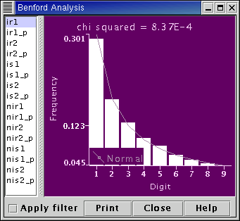

The distribution of 1st significant digits in many real data sets is not uniform, but follows Benford's law (F. Benford, ,Proc. Am. Phil. Soc., 78 (1938), pp551-572). In base 10 Benford's law says the probability, P(D), of D being the 1st significant digit is,
This curious statistical law, actually first noted by Newcomb (S. Newcomb, Amer. J. Math., 4 (1881), pp39-40), says that numbers whose 1st significant digit is 1 occur approximately 30% of the time, whilst those whose 1st significant digit is 9 occur approximately 5% of the time. It has been noted recently (D.C. Hoyle et al, Bioinformatics, 18 (2002), to appear) that spot intensities from microarray experiments follow Benford's law very closely. This application plots the frequency, fD, of 1st significant digits for the selected data set and compares it to Benford's law. The chi-squared statistic indicates the amount of agreement. The smaller the chi-squared value is, the closer the agreement between the observed distribution of 1st significant digits and Benford's law.

The frequencies of 1st significant digits are calculated for the Measurement selected by the user from the list of Measurements on the left hand side of the User-Interface. The frequencies are displayed in the graph on the right hand side of the User-Interface. The Benford's law distribution is also shown on the graph as a solid line. The chi-squared value, measuring the degree of agreement between the distribution of 1st significant digits in the selected Measurement and Benford's law, is shown above the graph.